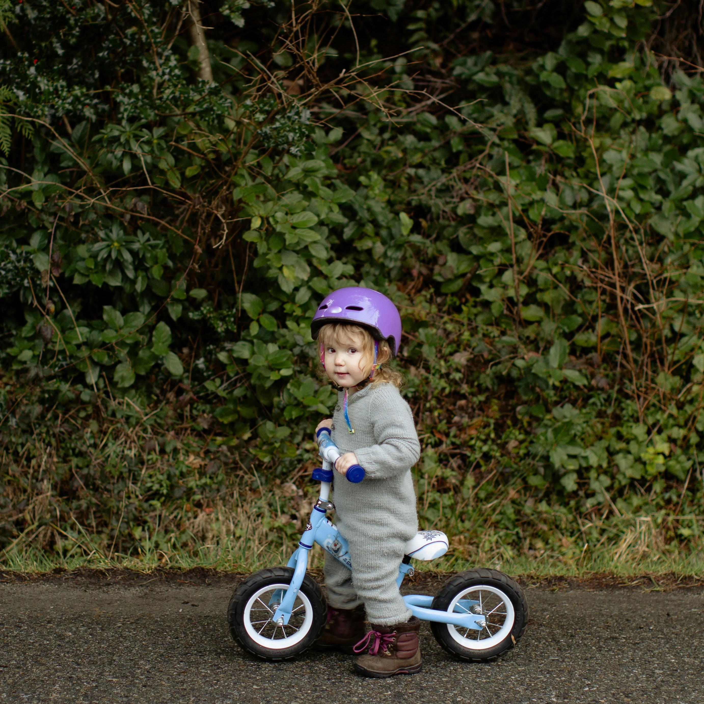
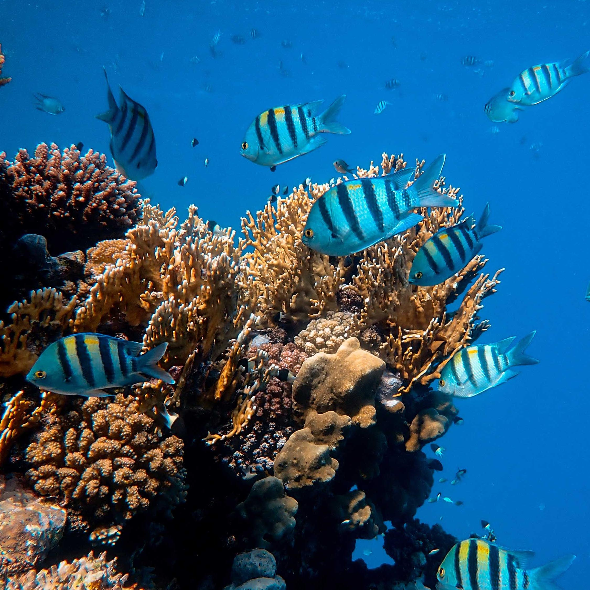
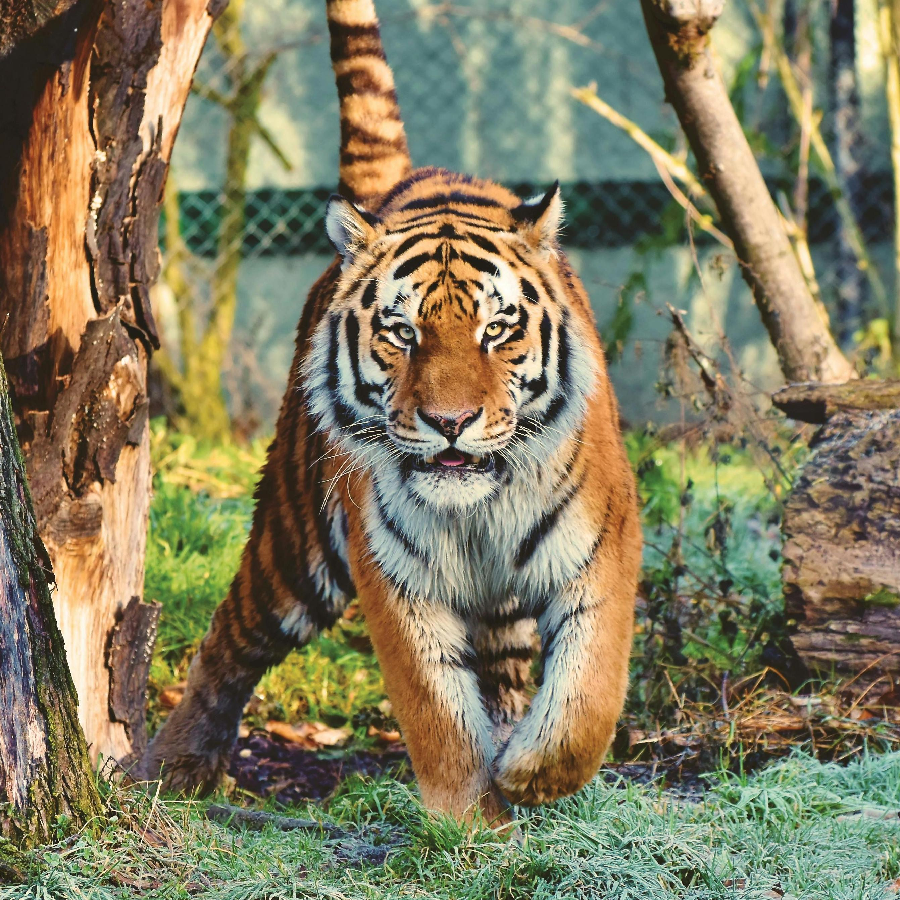

{% include header.html %}

    <main id="portfolio">
        <div class="row">
            <div class="col-md-12">
                <div class="hero-container">
                    <div class="hero-content">
                        <div class="row text-left">
                            <div class="col-sm-12">
                                <h2>🔥Interactive results of SteerX🔥</h2>
                                <!-- <p>Generating more results for fun here. Check <a href="./test_0.html">this page</a> for the comparison over 40 test prompts in our experiments.</p> -->
                            </div>
                        </div>
                    
                        <div style="font-size: 20px; text-align: center; padding: 1em">
                            <a href="https://byeongjun-park.github.io/SteerX/">Home</a>
                            &nbsp;&bull;&nbsp;
                            <a href="gallery_0.html">Text-to-4D</a>
                            &nbsp;&bull;&nbsp;
                            <strong>Image-to-4D</strong>
                            &nbsp;&bull;&nbsp;
                            <a href="gallery_2.html">Text-to-3D</a>
                            &nbsp;&bull;&nbsp;
                            <a href="gallery_3.html">Image-to-3D</a>
                        </div>
                    </div>
                </div>
                <div class="content-wrap">
                    <div class="row post-row">
                        <div class="container">
                            <div class="content">
                                <div id="wrapper" style="display: flex; flex-direction: row; justify-content: center; align-items: flex-start; gap: 20px; text-align: center; margin-bottom: 10px;">
                                    <div class="iframe-container" onclick="showIframe(this, 'files/image-to-4d/a blue train.viser&initDistanceScale=0.25&initHeightOffset=0.05')">
                                        
                                    </div>
                                    <div class="iframe-container" onclick="showIframe(this, 'files/image-to-4d/cars.viser&initDistanceScale=0.2&initHeightOffset=0.05')">
                                        
                                    </div>
                                    <div class="iframe-container" onclick="showIframe(this, 'files/image-to-4d/ballons.viser&initDistanceScale=0.2&initHeightOffset=0.05')">
                                        
                                    </div>
                                </div>

                                <div id="wrapper" style="display: flex; flex-direction: row; justify-content: center; align-items: flex-start; gap: 20px; text-align: center; margin-bottom: 10px;">
                                    <div class="iframe-container" onclick="showIframe(this, 'files/image-to-4d/fire.viser&initDistanceScale=0.2&initHeightOffset=0.0')">
                                        
                                    </div>
                                    <div class="iframe-container" onclick="showIframe(this, 'files/image-to-4d/girl.viser&initDistanceScale=0.3&initHeightOffset=0.05')">
                                        
                                    </div>
                                    <div class="iframe-container" onclick="showIframe(this, 'files/image-to-4d/fish.viser&initDistanceScale=0.2&initHeightOffset=0.1')">
                                        
                                    </div>
                                </div>

                                <div id="wrapper" style="display: flex; flex-direction: row; justify-content: center; align-items: flex-start; gap: 20px; text-align: center; margin-bottom: 10px;">
                                    <div class="iframe-container" onclick="showIframe(this, 'files/image-to-4d/shuttle.viser&initDistanceScale=0.2&initHeightOffset=0.05')">
                                        
                                    </div>
                                    <div class="iframe-container" onclick="showIframe(this, 'files/image-to-4d/tiger.viser&initDistanceScale=0.2&initHeightOffset=0.05')">
                                        
                                    </div>
                                    <div class="iframe-container" onclick="showIframe(this, 'files/image-to-4d/waterfall.viser&initDistanceScale=0.2&initHeightOffset=0.05')">
                                        
                                    </div>
                                </div>
                            </div>
                        </div>
                    </div>
                </div>
            </div>
        </div>
    </main>


    <script>
        function showIframe(container, iframeSrc) {
            if (!container.querySelector("iframe")) {
                container.innerHTML = `<iframe src="https://byeongjun-park.github.io/SteerX/build/?playbackPath=https://byeongjun-park.github.io/SteerX/${iframeSrc}" style="width: 375px; height: 375px; cursor: pointer;"></iframe>`;
            }
        }
    </script>

{% include footer.html %}